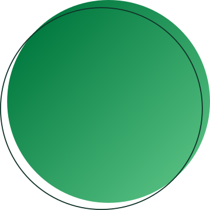
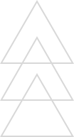

Respeitar o meio ambiente e
criar alternativas sustentáveis
para nosso processo de produção
DESCER PÁGINA
REDUÇÃO DOS
Ciente do papel que exerce sobre a indústria do plástico, na sociedade e no meio ambiente a EKKO busca adotar ações que contribuam para a redução dos impactos ambientais.
Mais que uma filosofia, respeitar o meio ambiente, criar alternativas sustentáveis para nosso processo produtivo e conscientizar nossos colaboradores são metas para a EKKO.
SISTEMA DE

A EKKO possui seu próprio
sistema de tratamento de
água com foco no
processo produtivo.
Os equipamentos utilizados na fabricação de compostos utilizam água em vários de seus processos como: extrusão, resfriamento e limpeza dos silos. A água utilizada para estas etapas, retorna ao centro de tratamento com excelente qualidade, para ser reutilizada na fábrica nos processos produtivos. Estas medidas foram adotadas com o intuito de reduzir os impactos ambientais e preservação dos recursos naturais.

EKKO®EKKO
COMPOSTO DE POLIETILENO “EKKO”
Fonte Renovável
Focado em sustentabilidade e química renovável, os compostos poliolefínicos denominados “EKKO”, são obtidos a partir do etanol da cana de açúcar. Além de serem de origem renovável, eles são 100% recicláveis e não contribuem para o aumento do aquecimento global.

Focado na fabricação de fios e cabos, a sua constituição é exatamente igual ao polietileno comum, garantindo assim todas as propriedades físicas e químicas do plástico convencional de origem fóssil.

CAMINHANDO JUNTO COM ESTE AVANÇO TECNOLÓGICO A EKKO DISPÕE DOS SEGUINTES PRODUTOS:

EKKO®
Composto Alternativo EKKO
Também focado em ações que contribuam com a redução dos impactos ambientais e química renovável, o composto de PVC EKKO® foi desenvolvido a partir de 100% do reaproveitamento dos resíduos de fabricação EKKO que seriam descartados no meio ambiente e não receberiam o tratamento adequado para voltar a ser uma matéria prima.
Estes resíduos são selecionados e reprocessados tornando um produto novo, renovável e focado para aplicações.